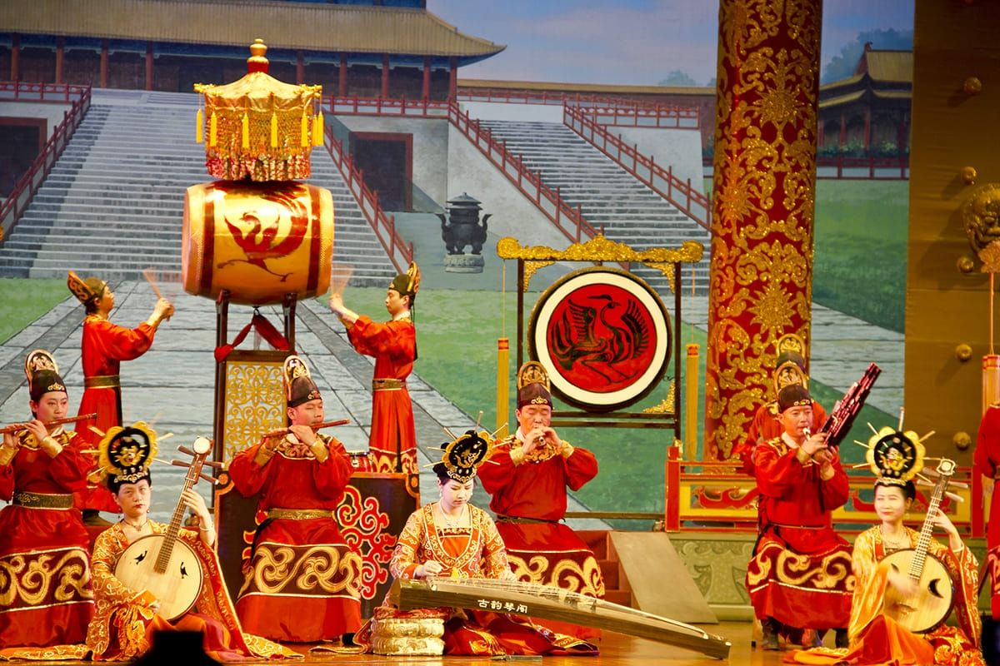
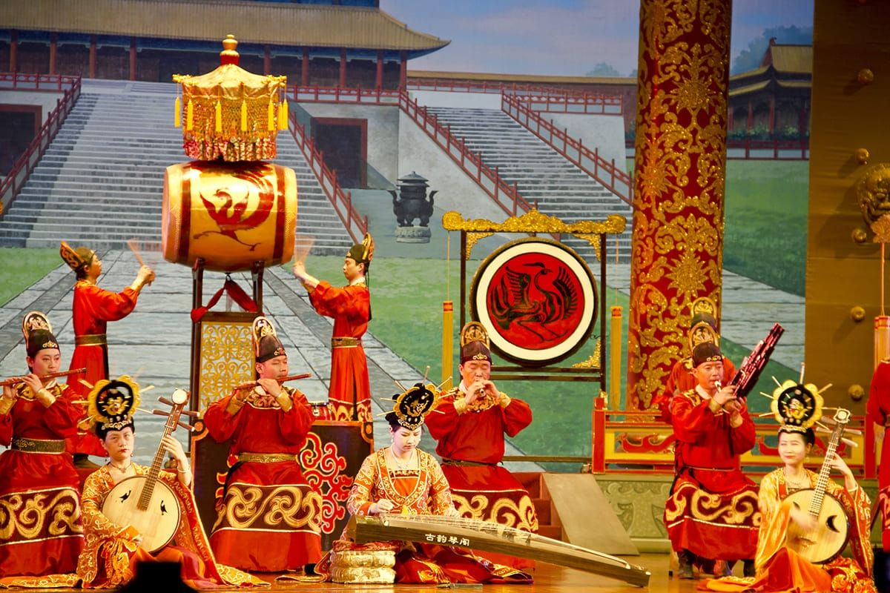
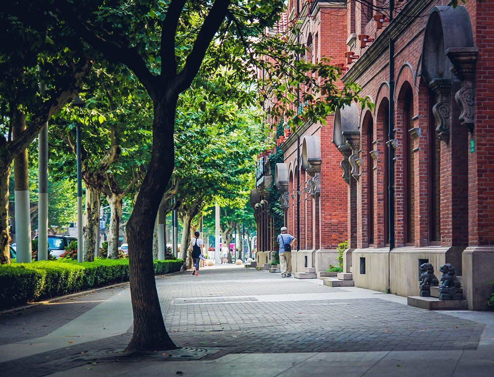
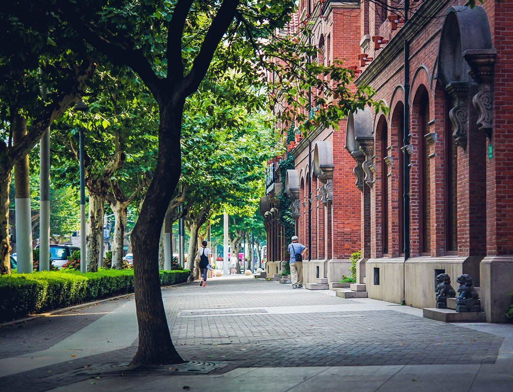

My name is Erica Munger, I originally come from China, and I live in Atlanta GA. I’ve been in the USA for 15 years. I was born in LanZhou southwest of China, grew up staying in the village in ShanDong where my father’s family originally from, we called it our family root for few years. Later on I moved to Bejing the capital of China started my student life and graduated from college in Beijing. My family are spread out all over China. I had the privilege travelling with my parents since I was young. Later on I started my media career right after graduation from Beijing Technology and Business University. I interned at Macau TV station and CCTV station which is the largest media station in China.
I think because of the nature of my family were all over China, I got to travel in such young age, I was never afraid of talking and meeting new people, quite the opposite, I enjoyed and very curious on finding out the adventure of what’s going on outside the world. I began to see the value of networking and linking the right people with right resources in a very early young age. By the time I was done with school I already built a broad network connections. Throughout the years, I continue nurturing and growing the relationship I had with my Chinese tribe even after I moved to the States, it never stopped me from growing as young entrepreneur. I served as CFO and Chief digital marketing strategist of High Powered Help, Inc. since 2004. In 2013, I founded U.S. Direct Trading, Inc. an import / export trading company with logistics specialties. I’m also a founding principal of Sino-American Marketing Partners, LLC.
I’m very active in the Chinese community contributing time and talent to various charities. I build custom marketing strategies tailored for client’s specific business. I leverage the latest marketing platforms and technologies to build a data-driven marketing plan that produces results.
In the past, whenever people find out where I’m from, the very first thing they say to me is: I want to go to China! It’s a great “gate opener” for me. From there the conversation just flows, because China is such a mysterious country, the Great Wall, the rich culture, thousand years of history, the food and etc. Almost everyone I talk to, China is on the bucket list to go. So finally this year an opportunity came in I was able to collaborate with one of biggest travel agency company in China. After months of preparation I’m very happy to tell all my friends that this September I’m putting a group together to go to CHINA! To check off your bucket list, to show you the REAL China! ----I carefully hand selected 3 cities: Beijing, ShangHai, Xi An The top 3 cities to visit for the first time travelers to China. You’ll see the ancient, you’ll see the present and you’ll see the future of China.
For business owners I carefully selected ONE more city—Yi Wu to our trip for 2 extra days, we are going to visit THE “Whole Sale” city just down south of Shanghai where all the magic was made in China. So that being said if you are already doing business with Chinese manufactures or if you are looking for products to be made in China, this is the GOLDEN opportunity to contact me ahead of time. I’ll set up meetings for you to meet with manufacture representative in your industry. You get to meet with decision makers face to face communicate exactly what you need. From there, relationship is build, business transactions are established.
With the warmest welcome, I am personally going to lead this trip. I’ll be there every step of the way to ensure your China dream is fulfilled with only pleasant memories. If you know me personally you know I only put the best of the best in my package. I’m inviting you to join my “2018 Discover China Tour”, let’s create memories together! And Thank you for the opportunity allowing me to show you my country!
When: Sep.6-Sep.17, 2018. Price: $3697/per person with China domestic air included.
09/06
Atlanta / Beijing by air
Depart from Atlanta today aboard a spacious jet for your transpacific journey. When you cross the international dateline from east to west, you lose a day and you will “gain” the lost day back when you fly from China back to US.
09/07
Arrive Beijing
Regent Hotel Beijing or same
Upon your arrival, our guide will meet you at the airport and then escort you to check into your luxury hotel. The rest of the day will be free to stay in the hotel for your jetlag recovery.
09/08
Beijing
Beijing is the capital of China and the host city for the 2008 Olympics. In the morning, you will first go to visit the Temple of Heaven, the complex visited by the Emperors of the Ming and Qing dynasties for annual ceremonies of praying to Heaven for good harvest.
After lunch, you will go to visit Tiananmen Square, a famous landmark and the world's largest public square. After visiting the Tiananmen Square, you will continue to visit the Forbidden City, the former Chinese imperial palace from the Ming dynasty to the end of the Qing dynasty—the years 1420 to 1912, it now houses the Palace Museum.
Enjoy the Bai Family Courtyard – Cuisine.
09/09
Beijing
The Great Wall of China is one of the seven greatest man-made wonders of the world and is definitely the focal point of China. You will hike along the Great Wall (Juyongguan Pass). In the afternoon, you will have a photo stop at the Olympic venues – Bird Nest and the Water Cube as well as the National Grand Theater. In the evening, you will enjoy the Peking Roast Duck dinner, the region's famous dish.


09/10
Beijing
This morning you will visit Beijing traditional alley (Hutong) by pedicab. It is a unique cultural experience that allows you to take a glance at the city’s traditional local life. A "Hutong" is an ancient city alley or lane typically lined with Siheyuan (the traditional residential areas of the people of Beijing, also known as Beijing Quadrangle). In fact, many families have lived in a single Hutong for hundreds of years, and thus have formed the core of Beijing’s local customs and culture.
After lunch, you will go to visit the Summer Palace, the largest and most well-preserved royal park in China, it greatly influences Chinese horticulture and landscape with its famous natural views and cultural interests, which also has long been recognized as 'The Museum of Royal Gardens'. Dinner will be in your hotel on your own.


09/11
Beijing / Xian by air
Fly to Xi'an today, the former capital of China with the history of over 3000 years. Upon your arrival, you will visit Hanyangling Mausoleum Museum, a joint tomb of the notable emperor of the Western Han Dynasty (206 BC-24AD), and his empress built in the year of 153 AD. It is a magnificent and abundant cultural relic, comprising the emperor's tomb, empress' tomb, the south and north burial pits, ceremonial site, human sacrifice graveyard and criminals' cemetery. Neatly arranged and centered with the emperor's tomb, it reveals the strict hierarchical social structure. The Outside Pits Exhibition Hall was opened in 2006 and is the first underground museum in China. Check in the hotel after dinner.
09/12
Xi'an
In 221 BC, Qin Shi Huang unified China and became the first emperor. When he died, an entire Terra Cotta Army was constructed to be buried along with him. It was un-covered serendipitously in 1974 by local farmers when digging a well for irrigation, then it became one of the century's greatest archeological discoveries. Today you will visit this very special Terra Cotta Warriors and Horses Museum.
Dinner show: Chinese traditional dumplings banquet and the Tang Dynasty Dance and Music show.

 

09/13
Xi'an
Today you will first visit Shaanxi History Museum, one of the best and the largest museums in China. The museum houses over 370,000 items, including murals, paintings, pottery, coins, as well as bronze, gold, and silver objects.
After lunch, you will visit the Small Wild Goose Pagoda. The pagoda survives from the Tang Dynasty (618-907). It is more peaceful and tranquil. As part of the artistic heritage of Buddhist architectures of the Tang Dynasty, it witnessed how Buddhism was introduced to China and integrated with the culture of Han nationality. Later on you will go to visit the 600 years old City Wall of Xian and go to downtown area to visit the famous local Muslim food quarter in the hub of the Muslim community in Xian City, it will be a special experience to know the local Muslim snack food and the life of the Muslims.


09/14
Xian / Shanghai – Suzhou by air
Fly to Shanghai today and be transferred to Suzhou, it is praised as the 'Venice of the Orient'. Built in 514 BC, this is an ancient city with over 2,500 years of history and numerous points of interest. The unique characteristics of the past are still retained today. The double-chessboard layout of the city, with 'the streets and rivers going side by side while the water and land routes running in parallel', is preserved intact. Touring the wonderful ancient water towns in the vicinity or lingering in the exquisite classical gardens in the downtown area, you will truly know the charm of a 'paradise on earth'. As the saying goes - 'Gardens to the south of the Yangtze River are the best in the world, and Suzhou gardens are the best among them'.

09/15
Suzhou - Shanghai
You will visit San Tang Street which has always been regarded as the first name of Suzhou ancient streets. Santang Street has a long history of about 1,100 years, its layout and architecture are best to represent the characteristics of Suzhou's old alleys, and it has connections to many ancient Chinese celebrities and anecdotes. The Lingering Garden is a renowned classical Chinese garden and is recognized with other classical Suzhou gardens as a UNESCO World Heritage Site. China is known for its silk, so for sure we will take you to the Silk Spinning Factory and the Silk Embroidery Institute. Depart for Shanghai in the afternoon.

09/16
Shanghai
Today you will visit the Chenghuang Temple mart and the city’s colonial European past at The Bund. In the afternoon, go to visit Shanghai Tower, the 2 nd tallest in the world (height to tip is over 632 m/2,073 ft.). The building is serviced by 149 elevators, of which 108 are lifts. Three of the lifts can send passengers up to the 500 meters (about 1,640 feet) high sightseeing platform from street level within one minute, which is a world record holder. The rest of the time you will go to visit the old French Concession area. The leafy boulevards of the elegant French Concession are home to cozy live-music venues and boutique wine bars, as well as indie fashion shops and European delis.

 

09/17
Shanghai / Atlanta by air
Your wonderful vacation is over all too soon as you will board the homebound flight and bid a fond farewell to China today. You will gain the lost day back by crossing the international dateline.
Total with China domestic air: $3697 per person
Single Room Supplement: $1250
Note:
1. Gratuity tips to the tour guide and the driver is not included, it is recommended to pay $10 per day from each of the customer.
2. Visa to China is not included. We can help the customer to apply for the visa. The cost for the visa will be $280 Per person.
3. Food: food will be included as listed in the itinerary: AB = American Buffet breakfast in the hotel L = Lunch (Chinese lunch ) D = Dinner (Chinese dinner)
Growth and expansion are key goals for most business owners and entrepreneurs. But how can you expand your business in today’s lackluster and slow-growth economy? How to find more products with the very good competitive price? Spring Tour will bring you to have the additional 3 days extension trip to Yiwu, a city nearby Shanghai where people call it – the Walmart of the world. You've probably never heard of Yiwu, but you definitely own a number of items that come from there. If China is the world's factory, then Yiwu, not Beijing, is its capital. Yiwu, a small city in Zhejiang Province, is home to the Yiwu International Trade City, also known as China Commodity City. The market has been named by the UN, World Bank, and JP Morgan, among others, as the "largest small commodity wholesale market" in the world. Spring Tour has an office there in Yiwu that can help you for your future business in Yiwu.
09/17
Shanghai – Yiwu by morning bullet train
You will ride on the bullet train to Yiwu. Our representative in Yiwu will meet you at the train station. In the afternoon, you will all invited to attend the presentation focus on the Yiwu introduction and China export policy and how our office in Yiwu can help you for your future products purchase and shipping to your requested port. You will also meet the manufactures for your future business talks.
A welcome dinner will be arranged with the presentation to introduce you more about Yiwu and have Q & A.
09/18
Yiwu
Whole day today will be the time for you to explore Yiwu to find more business opportunities. Yiwu International Trade City has five shopping districts, each the size of several warehouses combined. This mega center occupies about 46 million sq. ft., with 62,000 booths inside. From 9 am to 5 pm, over 100,000 suppliers exhibit 400,000 different kinds of products and 65% of these products are exported to over 215 countries and regions. The market contains thousands of vendors and sells to customers all over the world. The vendors represent factories from all over China, though many are based nearby Yiwu in Zhejiang, and many will take custom orders for specific products in addition to the many products they already produce.
We believe you will surely find the ideal products in your explore today.
Dinner will be the farewell banquet and the presentation to introduce you more about Yiwu and have Q & A.

09/19
Yiwu – Shanghai - Atlanta by delta
Your wonderful vacation is over all too soon as you will board the homebound flight and bid a fond farewell to China today. You will gain the lost day back by crossing the international dateline.
Note: it will depend on the flight you will book. If you book the flight back to Atlanta by Delta, you will fly direct flight from Shanghai to Atlanta. (Delta will begin the operation on July 22), so you can save the cost from Shanghai to Beijing or other city for transit to fly back to Atlanta.
Quote: $550 per person
Single Room Supplement: $160